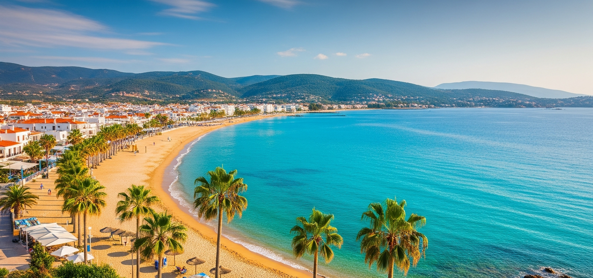
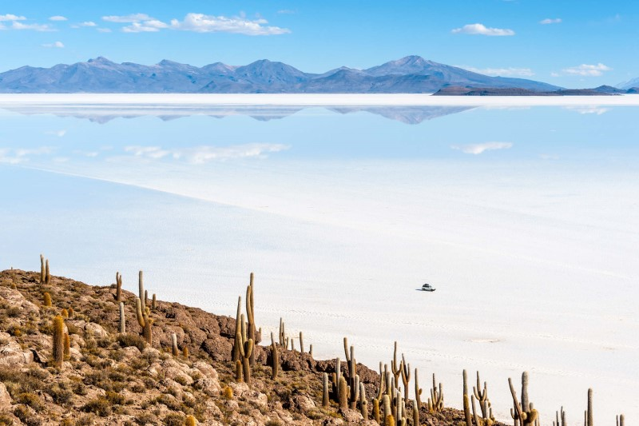

Somos una empresa dedicada a mostrarte lo mejor de Bolivia. Nuestro objetivo es brindarte experiencias inolvidables a través de tours únicos y personalizados por los destinos más impresionantes del país.
“El tour al Salar de Uyuni fue una experiencia inolvidable, la organización y el guía fueron excelentes.”
- Carla M.“Me encantó el recorrido por el Valle de la Luna, todo muy seguro y divertido. ¡Repetiría sin dudarlo!”
- Luis F.“Reservé el tour al Lago Titicaca y superó mis expectativas. Muy recomendable para familias.”
- Andrea P.“La visita a la Cordillera Real fue espectacular, paisajes únicos y atención de primera.”
- Mario S.“Excelente servicio en el tour a Samaipata, aprendimos mucho y nos divertimos en todo momento.”
- Patricia V.“El tour por el Pantanal fue una aventura increíble, vimos mucha fauna y la logística fue perfecta.”
- Diego R.“Muy recomendable el tour a Toro Toro, las cavernas y paisajes son impresionantes.”
- Sofía L.“La experiencia en el Carnaval de Oruro fue única, gracias por la excelente organización.”
- Juan C.“Nos encantó la excursión a la Ruta del Vino en Tarija, todo muy bien coordinado.”
- Gabriela T.